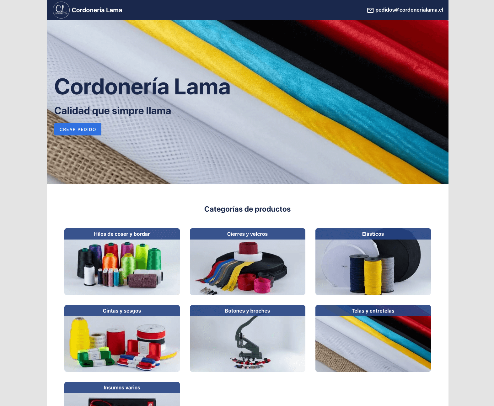

01
Desarrollo de sitios web
Creación de sitios web para presentar tu negocio, explicar tus servicios y facilitar el contacto con tus clientes. Diseño adaptable a móviles y buenas prácticas técnicas desde el inicio.
Desarrollo web para pequeñas empresas
Ayudo a pequeñas empresas a crear y mejorar sus sitios web, con especial atención al rendimiento, la accesibilidad y la facilidad de uso. También desarrollo soluciones web para simplificar tareas y procesos.
Cuéntame tu proyectoNo todas las empresas necesitan empezar de cero. A veces basta con mejorar lo que ya existe.
Soluciones adaptadas a la necesidad de cada negocio, con un alcance y entregables acordados.
01
Creación de sitios web para presentar tu negocio, explicar tus servicios y facilitar el contacto con tus clientes. Diseño adaptable a móviles y buenas prácticas técnicas desde el inicio.
02
Revisión y mejora de sitios existentes con problemas de velocidad, visualización, accesibilidad o estructura técnica que afecta al SEO.
03
Desarrollo de formularios, herramientas e integraciones para simplificar tareas como recibir pedidos, gestionar solicitudes o intercambiar información.
Un ejemplo de cómo una solución web puede facilitar un proceso del negocio.

Cordonería Lama
Soy Esdras Malavé, ingeniero de sistemas y desarrollador frontend con más de ocho años de experiencia en el desarrollo y mejora de aplicaciones web.
Me especializo en crear interfaces adaptables a distintos dispositivos, mejorar el rendimiento y aplicar buenas prácticas de accesibilidad, semántica y SEO técnico. He trabajado en proyectos de distintas dimensiones y enfoco mis servicios en ayudar a pequeñas y medianas empresas a resolver necesidades concretas mediante soluciones web.
Conoce mi trayectoria en LinkedIn (abre en otra pestaña)Describe qué necesitas crear o mejorar. Revisaré tu mensaje para entender el alcance de la necesidad.
Cuéntame qué problema quieres resolver y qué resultado esperas. Si ya tienes un sitio web, incluye su dirección.